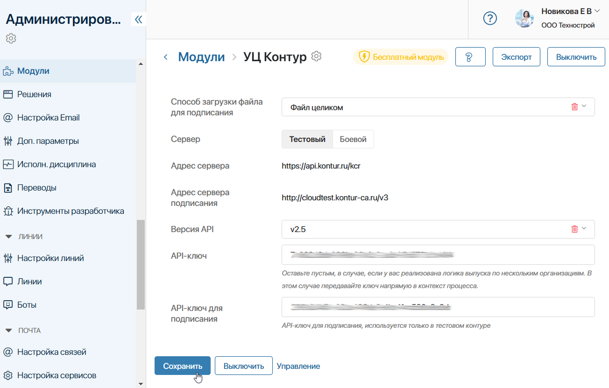

Чтобы внедрить легитимный кадровый электронный документооборот в компанию, предоставьте сотрудникам возможность подписывать документы удалённо с помощью сертификатов электронной подписи.
В ELMA365 КЭДО 3.0 используются следующие подписи:
- Усиленная квалифицированная электронная подпись (УКЭП) — выдаётся подписантам со стороны работодателя с помощью провайдера КриптоПро;
- Усиленная неквалифицированная электронная подпись (УНЭП) — выпускается автоматически всем сотрудникам в ходе процесса трудоустройства. В текущей версии решения для этого используется сервис УЦ Контур.
начало примечание
Примечание
Вы можете дополнительно также использовать отдельное решение Интеграция с Госключом. Это позволит сотрудникам бесплатно получить сертификат УКЭП или УНЭП, установив мобильное приложение Госключ. При этом подписание документов выполняется в приложении. Затем информация передаётся в ELMA365, и задача подписания в системе и на портале автоматически завершается.
конец примечание
Настройка возможности электронного подписания для ELMA365 КЭДО 3.0 через сервисы Крипто Про и УЦ Контур выполняется в несколько этапов:
- Подключите модуль КриптоПро для выпуска УКЭП. Подробнее об этом читайте в статье «КриптоПро, НУЦ».
- Настройте входящие в состав решения КЭДО 3.0 модули: Массовое подписание КЭДО и УЦ Контур. С их помощью включается массовое подписание пакета документов, а также автоматический выпуск сертификатов УНЭП.
- Определите способ подписания в организации, т. е. укажите, каким образом сотрудники подтверждают выданные им облачные сертификаты при выполнении задач подписания.
начало внимание
Выполнять настройки для подключения электронных подписей могут только пользователи, входящие в группу Администраторы.
конец внимание
В этой статье рассмотрим настройки, которые выполняются в решении КЭДО 3.0.
Подключить преднастроенные модули
Модуль «Массовое подписание КЭДО»
Перейдите в раздел Администрирование > Модули, выберите модуль Массовое подписание КЭДО и включите его. Параметры настроек для модуля не предусмотрены.
Активация модуля позволяет сотрудникам подписывать сразу несколько документов на форме задачи. Они смогут выбрать сертификат УНЭП, запросить один код подтверждения сертификата и подписать все документы в виде пакета.
Модуль «УЦ Контур»
- Перейдите в раздел Администрирование > Модули, выберите модуль УЦ Контур и включите его.
- В открывшейся странице выполните настройки:

- Способ загрузки файла для подписания — из выпадающего списка укажите опцию Файл целиком;
- Сервер — выберите опцию:
- Тестовый — отметьте параметр, если хотите протестировать выдачу сертификатов ЭП пользователям, например, при использовании демоверсии решения КЭДО 3.0. В этом случае обратитесь к вашему менеджеру ELMA365 с запросом тестовых API-ключей для выпуска сертификатов провайдера и подписания. Затем продолжите настройки;
- Боевой — укажите опцию, если вы заключили договор с удостоверяющим центром и получили API-ключ, который сможете использовать для выдачи сертификатов УНЭП.
- Адрес сервера, Адрес сервера подписания — поля заполняются автоматически;
- Версия API — в выпадающем списке выберите опцию v2.5;
- API-ключ — внесите тестовый ключ, предоставленный менеджером ELMA365, или официальный ключ, который вы получили в удостоверяющем центре после заключения договора;
- API-ключ для подписания — поле заполняется только для подключения с помощью тестовой версии сервера. Значение ключа можно запросить у менеджера ELMA365.
- Сохраните настройки.
Настроить электронную подпись в разделе «КЭДО 3.0»
Создать способы подтверждения подписания
После подключения и настройки модулей, создайте способы подписания документов, которые будут доступны сотрудникам. Он определяет, каким образом пользователи получают код подтверждения сертификата электронной подписи при выполнении задачи подписания.
Способ устанавливается на уровне подразделений штатного расписания организации. В текущей версии решения доступны способы: СМС и Электронная почта.
В задачах подписания сотрудник запрашивает код подтверждения. В зависимости от способа, который указан в его подразделении, он сможет получить код в SMS-сообщении или в письме по электронной почте. Затем он вносит код на форму задачи и подписывает вложенные документы.
Чтобы добавить способы, выполните следующие действия:
- Перейдите в раздел КЭДО 3.0.
- Под разделителем Справочники найдите приложение Способ подписания и откройте его страницу.
- В правом верхнем углу нажмите + Способ подписания и заполните поля:

- Провайдер* — нажмите значок лупы и выберите запись из справочника Провайдеры. Справочник заполняется элементами автоматически в процессе первичной настройки ELMA365 КЭДО 3.0. В текущей версии используется провайдер УЦ Контур;
- Вид подтверждения выпуска НЭП* — из выпадающего списка выберите способ подтверждения, который будут использовать сотрудники при выполнении задач подписания: СМС или Электронная почта.
- Сохраните элемент.
- Если в организациях нужно использовать оба доступных вида подтверждения сертификата, создайте ещё один элемент приложения Способ подписания.
Определить способ подписания для подразделений штатного расписания
После добавления элементов в справочник Способ подписания, укажите вид подтверждения сертификата для каждого подразделения в штатном расписании. Если этого не сделать, в кадровых процессах могут возникнуть ошибки, и сотрудник не сможет подписывать документы.
Для упрощения настройки можно создать главное подразделение для юридического лица и указать его как вышестоящее для остальных отделов. В этом случае способ подписания задаётся только для главного подразделения, а для дочерних отделов он применяется автоматически. Сотрудники в этих подразделениях будут использовать выбранный способ подтверждения сертификата.
Чтобы определить способ подписания для подразделения, выполните следующие действия:
- В разделе КЭДО 3.0 под разделителем Штатная структура откройте приложение Подразделения ШР.
- Выберите карточку подразделения и нажмите Редактировать.
- В поле Способ подписания нажмите значок лупы и выберите запись, созданную вами ранее в справочнике Способ подписания.
Вы можете выбрать оба доступных варианта: СМС и Электронная почта. Тогда в ходе кадровых процессов сотрудник получает задачу указать вид подтверждения вручную. Таким образом он сможет выбрать наиболее удобный способ получения кода перед каждой задачей подписания документа.
- Сохраните изменения.
- Если способ подписания в подразделениях должен отличаться, укажите его для каждого головного отдела.
Настройки электронной подписи для ELMA365 КЭДО 3.0 завершены. Теперь пользователи, выполняющие роль подписантов от организации, смогут получать сертификаты УКЭП от провайдера КриптоПро. Сотрудникам при трудоустройстве будут выпускаться сертификаты УНЭП от провайдера УЦ Контур. В назначенных задачах пользователи смогут подписывать весь пакет вложенных документов.